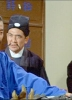

Also known as:Mang quan gui shou (original title)
Country:Hong Kong, 92 minutes
Spoken languages:Mandarin, Cantonese
Genres:Action, Adventure, Comedy
Director(s):Bong Luk
Writer(s):Shih Wu, Wei Yang
Video Codec:Unknown
Number: 897


Certification:
Storyline:
A well-to-do villager decides learning kung fu is the best way to protect himself and his family from the local gangsters. But the mentor he visits is a conman who is only after his money.
Cast: 

Medium: Original DVD,
Comments: Part of: Martial Arts Masters
Loaned: No
Aspect ratio: Unknown